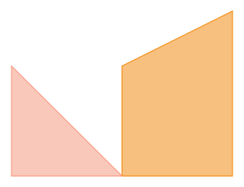
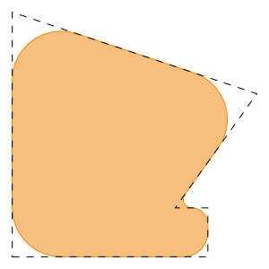

gdstk.Polygon
- class gdstk.Polygon(points, layer=0, datatype=0)
Polygonal geometric object.
- Parameters:
points (sequence) – Vertices of the polygon. Each element can be a pair of coordinates or a complex value.
layer – layer number assigned to this polygon.
datatype – data type number assigned to this polygon.
Examples
>>> polygon_1 = gdstk.Polygon([(0, 0), (1, 0), 1 + 1.5j, 1j]) >>> polygon_2 = gdstk.Polygon([0j, (-1, 1), (-1, 0)], 2, 3)
Methods
Create new polygons based on this object's
repetitionattribute.area()Polygon area.
Calculate the polygon bounding box.
contain(*points)Check whether points are inside this polygon.
contain_all(*points)Check whether all points are inside this polygon.
contain_any(*points)Check whether any of the points are inside this polygon.
copy()Create a copy this polygon.
delete_gds_property(attr)Delete a GDSII property of this element.
delete_property(name)Delete the first property of this element matching a name.
fillet(radius[, tolerance])Fillet the corners of this polygon.
fracture([max_points, precision])Fracture this polygon into a list of polygons.
get_gds_property(attr)Return a GDSII property of this element.
get_property(name)Return the values of the first property of this element matching a name.
mirror(p1[, p2])Mirror this polygon across the line through
p1andp2.Polygon perimeter.
rotate(angle[, center])Rotate this polygon.
scale(sx[, sy, center])Scale this polygon.
set_gds_property(attr, value)Set a GDSII property for this element.
set_property(name, value)Set a property for this element.
transform([magnification, x_reflection, ...])Transform the vertices of this polygon.
translate(dx[, dy])Translate this polygon.
Attributes
Polygon data type.
Polygon layer.
Vertices of the polygon.
Properties of this element.
Repetition associated with this element.
Number of vertices in this polygon.
- apply_repetition() list
Create new polygons based on this object’s
repetitionattribute.After the repetition is applied, the original attribute is set to
None.- Returns:
Newly created objects.
- area() float
Polygon area.
- Returns:
Area of the polygon.
- bounding_box() tuple
Calculate the polygon bounding box.
- Returns:
The lower-left and upper-right corners of the bounding box of the polygon:
((min_x, min_y), (max_x, max_y)).
Examples
>>> polygon = gdstk.Polygon([(0, 1), (1, 2), (3, -1)]) >>> bbox = polygon.bounding_box() >>> print(bbox) ((0.0, -1.0), (3.0, 2.0)) >>> polygon_bb = gdstk.rectangle(*bbox, datatype=1)
- contain(*points) bool, tuple
Check whether points are inside this polygon.
Points on the polygon edges or coinciding with any of its vertices are considered inside.
- Parameters:
points (point or sequence of points) – Points to check. Arguments can be a pair of coordinates, a complex number, or a sequence of those.
- Returns:
If the argument is a single point, returns a boolean. In the case of a sequence, a tuple of booleans (one for each point) is returned.
- contain_all(*points) bool
Check whether all points are inside this polygon.
Points on the polygon edges or coinciding with any of its vertices are considered inside.
- Parameters:
points – Points to check. Each point can be a pair of coordinates or a complex number.
- Returns:
True if all points are inside the polygon, False otherwise.
- contain_any(*points) bool
Check whether any of the points are inside this polygon.
Points on the polygon edges or coinciding with any of its vertices are considered inside.
- Parameters:
points – Points to check. Each point can be a pair of coordinates or a complex number.
- Returns:
True if any of the points are inside the polygon, False otherwise.
- copy() gdstk.Polygon
Create a copy this polygon.
- Returns:
Copy of this polygon.
- datatype
Polygon data type.
- delete_gds_property(attr) self
Delete a GDSII property of this element.
- Parameters:
attr (number) – Property number.
- delete_property(name) self
Delete the first property of this element matching a name.
- Parameters:
name (str) – Property name.
- fillet(radius, tolerance=0.01) self
Fillet the corners of this polygon.
- Parameters:
radius (number or sequence) – Fillet radius. A sequence of values can be used to define the fillet radius for each vertex.
tolerance – Tolerance used for calculating the polygonal approximation of the filleted corners.
Notes
The actual fillet radius for a given corner is the specified value or half the length of the shortest segment adjacent to that corner, whichever is smaller.
Examples
>>> points = [(0, 0), (1.2, 0), (1.2, 0.3), (1, 0.3), (1.5, 1), ... (0, 1.5)] >>> polygon_1 = gdstk.Polygon(points, datatype=1) >>> polygon_2 = gdstk.Polygon(points).fillet(0.3, tolerance=1e-3)
- fracture(max_points=199, precision=1e-3) list
Fracture this polygon into a list of polygons.
- Parameters:
max_points – Maximal number of vertices for each resulting polygon. Official GDSII documentation requires that all polygons have at most 199 vertices, but 8190 is usually supported by most software.
precision – Desired vertex precision for fracturing.
- Returns:
List of fractured polygons.
Notes
If
max_points < 5the return value is an empty list.Examples
>>> polygon = gdstk.racetrack((0, 0), 30, 60, 40, tolerance=1e-3) >>> poly_list = polygon.fracture() >>> print(len(poly_list)) 10 >>> print([p.size for p in poly_list]) [102, 103, 103, 101, 101, 102, 102, 103, 103, 102]
- get_gds_property(attr) str
Return a GDSII property of this element.
- Parameters:
attr (number) – Property number.
- Returns:
Property value. If the property number does not exist,
Noneis returned.- Return type:
str or None
- get_property(name) list
Return the values of the first property of this element matching a name.
- Parameters:
name (str) – Property name.
- Returns:
List of property values. If no property is found,
Noneis returned.- Return type:
list or None
- layer
Polygon layer.
- mirror(p1, p2=(0, 0)) self
Mirror this polygon across the line through
p1andp2.- Parameters:
p1 (coordinate pair or complex) – First point in the mirror line.
p2 (coordinate pair or complex) – Second point in the mirror line.
- perimeter() float
Polygon perimeter.
- Returns:
Perimeter of the polygon.
- points
Vertices of the polygon.
Notes
This attribute is read-only.
- properties
Properties of this element.
Properties are represented as a list of lists, each containing the property name followed by its values.
- repetition
Repetition associated with this element.
- rotate(angle, center=(0, 0)) self
Rotate this polygon.
- Parameters:
angle – Rotation angle (in radians).
center (coordinate pair or complex) – Center of the transformation.
- scale(sx, sy=0, center=(0, 0)) self
Scale this polygon.
- Parameters:
sx – Scaling in the x direction.
sy – Scaling in the y direction. If set to 0,
sxis used instead.center (coordinate pair or complex) – Center of the transformation.
- set_gds_property(attr, value) self
Set a GDSII property for this element.
GDSII properties are stored under the special name “S_GDS_PROPERTY”, as defined by the OASIS specification.
- Parameters:
attr (number) – Property number.
value (str) – Property value.
- set_property(name, value) self
Set a property for this element.
The property name does not have to be unique. Multiple properties can have the same name.
- Parameters:
name (str) – Property name.
value (str, bytes, number, or sequence of those) – Values associated with the property.
Notes
These properties can be used to associate custom metadata with an element, but general properties are not supported by GDSII files, only OASIS. Use the specific methods to access GDSII properties.
- size
Number of vertices in this polygon.
Notes
This attribute is read-only.
- transform(magnification=1, x_reflection=False, rotation=0, translation=None, matrix=None) self
Transform the vertices of this polygon.
The transformation if applied in the order of the arguments in the method signature, starting with a magnification. If a transformation matrix is given, it is applied after the other transforms.
- Parameters:
magnification (number) – Magnification factor.
x_reflection (bool) – If True, the vertices are reflected across the x axis.
rotation (number) – Rotation angle (in radians).
translation (coordinate pair or complex) – Translation vector.
matrix (matrix-like) – Transformation matrix with 2 or 3 rows and 2 or 3 columns.
Notes
If the number of rows or columns of the transformation matrix is 3, homogeneous coordinates are used.
- translate(dx, dy=None) self
Translate this polygon.
- Parameters:
dx – Translation in the x coordinate or translation vector.
dy – Translation in the y coordinate.